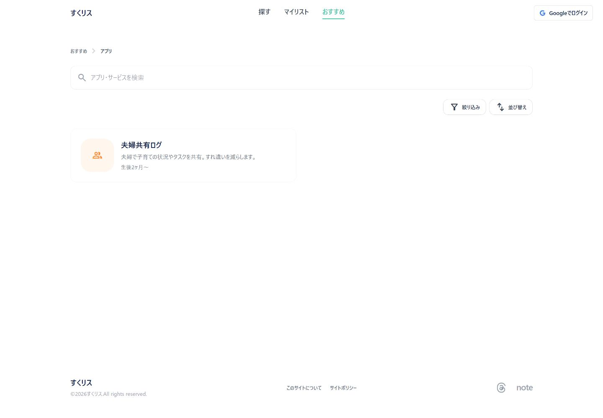
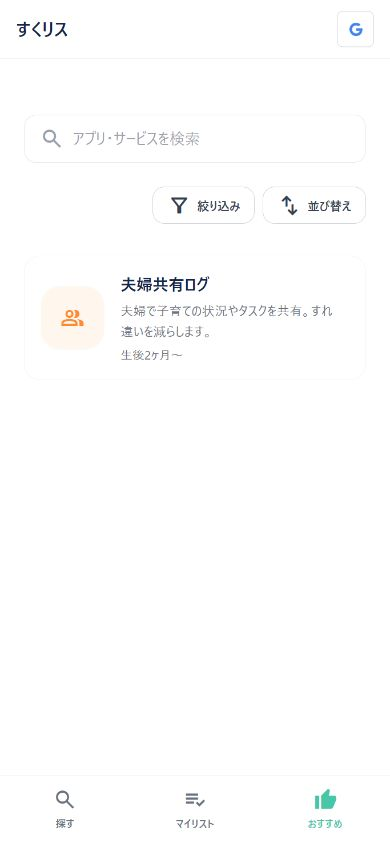
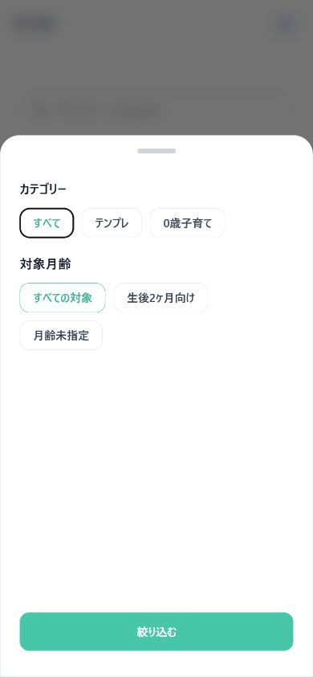
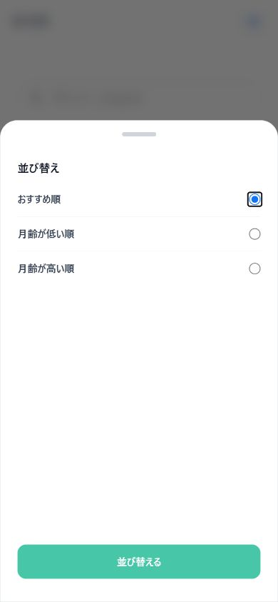

Current local implementation specification
おすすめ：アプリ（PC / SP）
おすすめのアプリ・サービスを検索し、カテゴリー・対象月齢・おすすめ順を組み合わせて閲覧する画面。
この資料は、実際の localhost:4321 をPC/SPビューポートで撮影し、現在のAstro実装とクライアント側の動作を仕様として整理したものです。画像はキャプチャ時点の端末データ・公開データを反映します。
1. 画面の目的と導線
おすすめカテゴリの「アプリ・サービス」一覧です。おすすめハブからの導線は /recommend/、一覧の正規URLは /apps/、カード押下先は /apps/:id/ です。
PC
一覧カードは2列グリッド。PCヘッダーの「おすすめ」とパンくずが現在位置を示す。
SP
カードは1列。画面下固定ナビの「おすすめ」が選択状態。
2. 実画面キャプチャ

パンくず、検索、右寄せの操作ボタン、アプリカード。

検索欄、絞り込み・並び替え、1列カード。

カテゴリーと対象月齢を選ぶ下部シート。

おすすめ順、月齢が低い順、高い順を選ぶ下部シート。
3. 表示・検索・絞り込み・並び替え
| 機能 | 仕様 |
|---|---|
| 表示 | apps content collectionをビルド時に取得し、data-order順に初期表示。PCは2列、SPは1列。 |
| 検索 | タイトルまたは説明文に対する小文字化部分一致。入力イベントごとに即時再描画。 |
| 絞り込み | カテゴリー（現在のデータから生成）と対象月齢。「すべて」「すべての対象」「月齢未指定」を含む。カテゴリー・月齢・検索はAND条件。 |
| 並び替え | おすすめ順＝data-order昇順。月齢が低い順／高い順＝data-ageの数値比較。月齢未指定は最後。 |
| シート | 絞り込みと並び替えは同じ下部シート内の表示セクションを切替。適用ボタンはモードに応じて「絞り込む」／「並び替える」。背景クリック・ハンドルの下スワイプで閉じる。 |
現在のキャプチャではアプリデータは1件。カテゴリーや対象月齢の選択肢はcontent collectionの実データから動的に作られます。
4. データのキャッシュ・保存法則
- 一覧データはAstroの
appscontent collectionから静的生成。ブラウザー起動後に一覧APIを呼び直さない。 - 検索・カテゴリー・月齢・並び順はページ内メモリのみ。URL、IndexedDB、localStorageには保存しない。
- リロードや別ページから戻ると、カテゴリー＝すべて、月齢＝すべての対象、並び＝おすすめ順へ戻る。
- アプリカードは詳細URLへのリンク。詳細ページ側のデータもビルド済みコンテンツを利用する。
- 標準のブラウザーHTTPキャッシュを除き、アプリ固有のTTL／キャッシュキーは実装していない。
5. 実装上の根拠
src/pages/apps/index.astro：content collection、PC/SPグリッド、検索、カテゴリー・月齢フィルター、3種の並び替え、下部シート。src/components/Header.astro／src/components/Footer.astro：PCヘッダーとSP固定ナビのおすすめ選択状態。